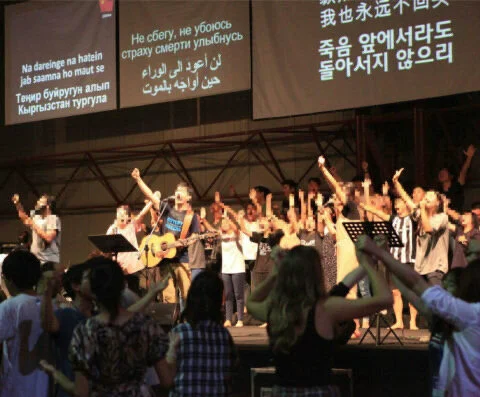

The days are growing darker and many churches are weakening before the challenges of the world. Anti-Christian sentiment is becoming more systemized on a global scale. More than ever before, there is an urgent need for faithful world churches to rise with the gospel of Jesus Christ and form a spiritual alliance.
Global Alliance Conference (GA) exists to build a global network and spiritual alliance of world evangelical churches to complete the Great Commission together as a global body of Christ.
During GA, participants gather to worship, pray, testify of God's work in their nation, and share mission strategies. It is a time to seek how we, as the Global Church, can overcome the anti-Christian challenges of the end times and strategize for rapid global evangelization. Through Global Alliance Conference, faithful evangelical churches from around the world will join together in spiritual alliance to overcome the times and rise as churches that will preach the gospel of the kingdom to the ends of the earth, preparing the way of Jesus' return.
For more information, email us at northamerica@intercp.org.
